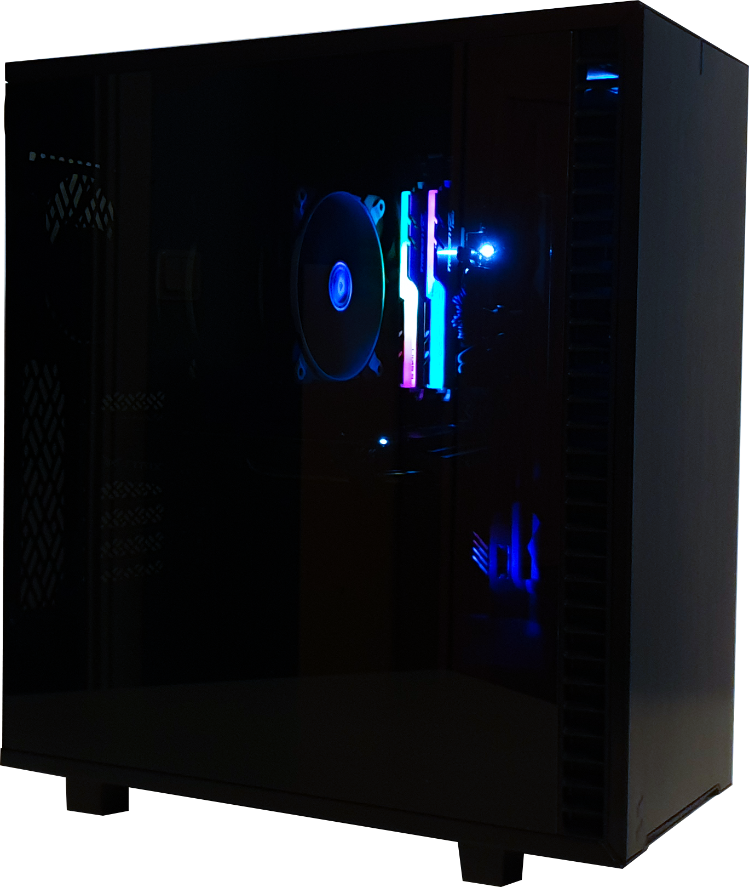

Mitt GA Projekt
Hem
Bygget
Komponenter

Välkommen
till dokumentationen av mitt datorbygge i form av en hemsida.
Här kommer du hitta
Byggets process
Valda komponenter till bygget
Gå till bygget
Paragraph 3